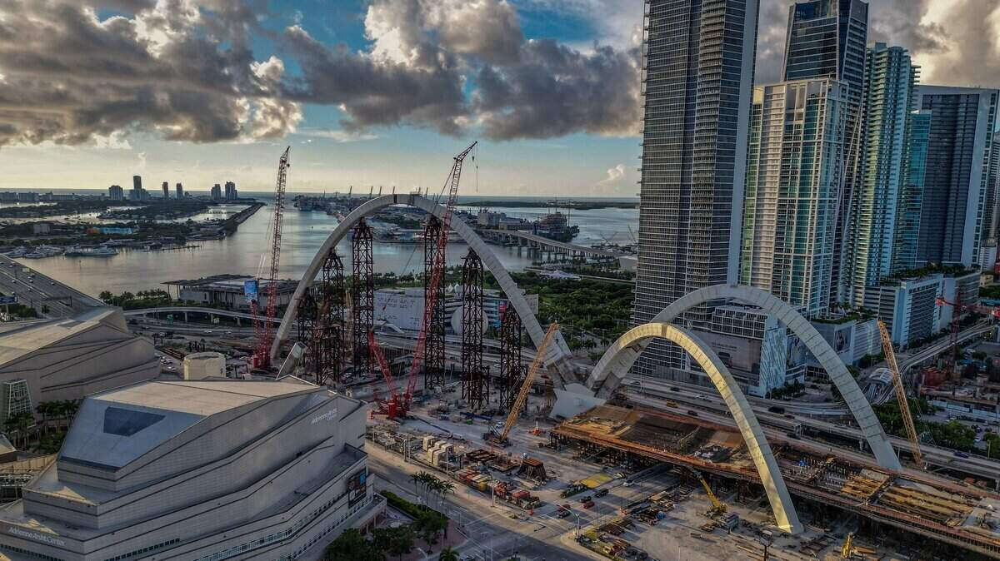
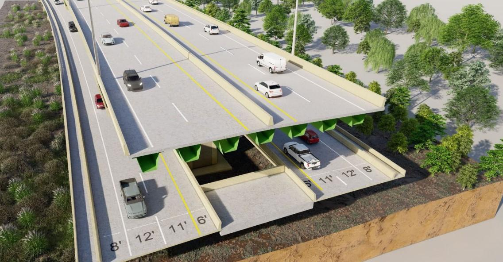
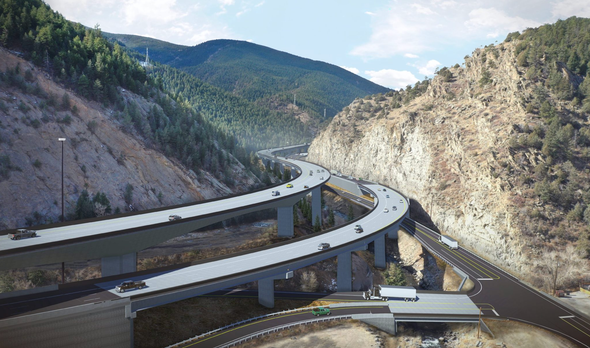

Advanced Structural Analysis & Design
Complex bridge analysis and design across concrete, steel, segmental, and foundation systems, supported by refined modeling and code-based design judgment.
ABOUT
Jiayi Ding, PhD, PE, PMP, has over a decade of professional experience in bridge design, advanced analysis, inspection and evaluation, rehabilitation, construction support, and technical leadership.
ENGINEERING PROFILE
Jiayi has worked across prestressed and post-tensioned concrete, segmental, steel girder, foundation, and complex substructure systems. His technical practice combines refined structural analysis with engineering judgment to understand load paths, constructability, and long-term performance—and translate them into practical design decisions.
CORE EXPERTISE
A combination of advanced structural engineering, multidisciplinary coordination, quality oversight, and team development across complex infrastructure programs.
Complex bridge analysis and design across concrete, steel, segmental, and foundation systems, supported by refined modeling and code-based design judgment.
Inspection-informed assessment, load rating, nondestructive testing, diagnostic load testing, rehabilitation, strengthening, and retrofit strategies for existing bridges.
Leadership of structural engineers and designers through modeling, calculations, plan production, independent design checks, quality review, and construction support.
SELECTED PROJECT EXPERIENCE





REHABILITATION PROJECT PROFILES
Additional compact project boxes connect the About page with the detailed rehabilitation project pages.


LEADERSHIP IN PRACTICE
Jiayi has served in lead and independent-check roles on major bridge programs, guiding engineers and CAD staff through analytical modeling, design calculations, detailing, plan production, and technical review. His leadership style is grounded in staying close to the engineering—setting a clear technical direction while creating structure for the team to execute efficiently.
He has led substructure and foundation design for elevated viaducts, independent design checks for post-tensioned segmental bridges, and multidisciplinary coordination involving superstructure, geotechnical, construction, and roadway teams. This combination of technical ownership and people leadership helps reduce rework, improve decision quality, and maintain consistency from analysis through final delivery.
INTEGRATED DIGITAL WORKFLOWS
Complex bridge design often requires multiple software platforms, each with different strengths. Jiayi develops integrated digital workflows that connect these tools across model preparation, analysis, design, and post-processing so project teams can work more efficiently and make better-informed engineering decisions.